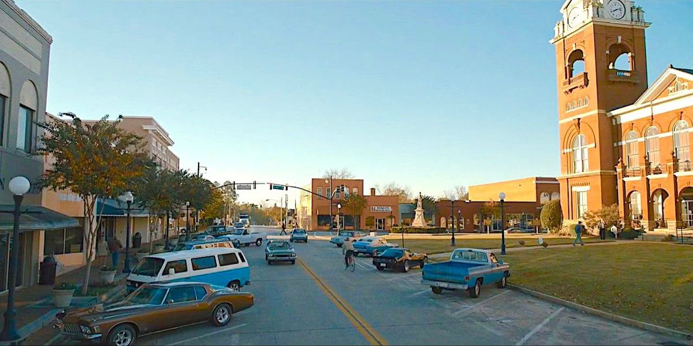

Hawkins, el mundo normal
Hawkins es un pueblo ficticio de Indiana en los años 80: bicicletas, salas de arcade, la escuela y el centro comercial. Parece tranquilo, pero a las afueras hay un laboratorio del gobierno que hace experimentos secretos. Es el punto de partida de toda la serie y el lugar que los héroes quieren proteger.
